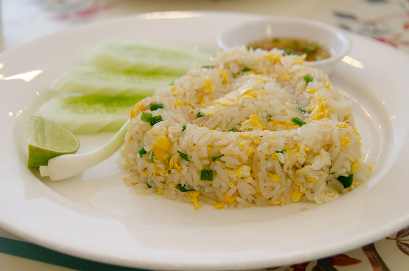

เเบบฝึกหัดที่2 Menu Recipe
6440011030 นายสิรภพ รามจันทร์
Menu Recipe

ส่วนผสม ข้าวผัดไข่
กระเทียมสับ
น้ำมันพืช
ไข่เป็ด 2 ฟอง
ข้าวสวยหุงสุก
ซอสปรุงรส
ซีอิ๊วขาว
น้ำตาลทราย
ต้นหอมซอย
พริกไทย
ต้นหอม
มะนาว
วิธีทำข้าวผัดไข่
1. ตั้งกระทะใส่น้ำมันพืชลงไป พอร้อนใส่กระเทียมลงไปผัดจนหอม ใส่ไข่ลงไปยีพอสุก
ใส่ข้าวลงไปคลุกเคล้าพอเข้ากัน ปรุงรสด้วยซอสปรุงรส ซีอิ๊วขาว และน้ำตาลทราย
ใส่ต้นหอมผัดพอเข้ากัน ปิดไฟ ตักใส่จาน โรยพริกไทย จัดเสิร์ฟกับต้นหอม มะนาว และพริกน้ำปลา
home